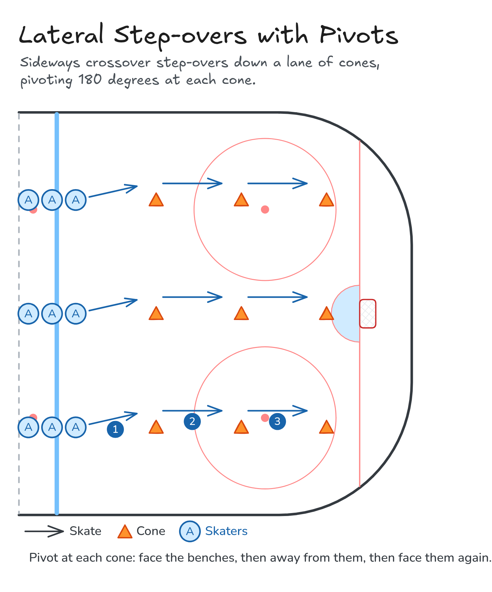

Lateral Step-overs with Pivots
Sideways crossover step-overs down a lane of cones, pivoting 180 degrees at each cone.
- Skating
Watch
Diagram

Coaching points
- Stay low and step the trailing leg over the lead leg.
- Shoulders and hips stay square to the way you are facing.
- Quick, tight pivots at each cone: don't drift past it.
- Keep your stick on the ice in front of you.
How it runs
- Set up lanes of cones from the blue line to the goal line.
- Step over sideways to the first cone, facing the benches.
- Pivot and step over to the second cone, facing away from the benches.
- Pivot and step over to the third cone, facing the benches again.
- Skate back up the outside to your line.
Downloads

Open the Excalidraw file in Excalidraw to change the diagram.